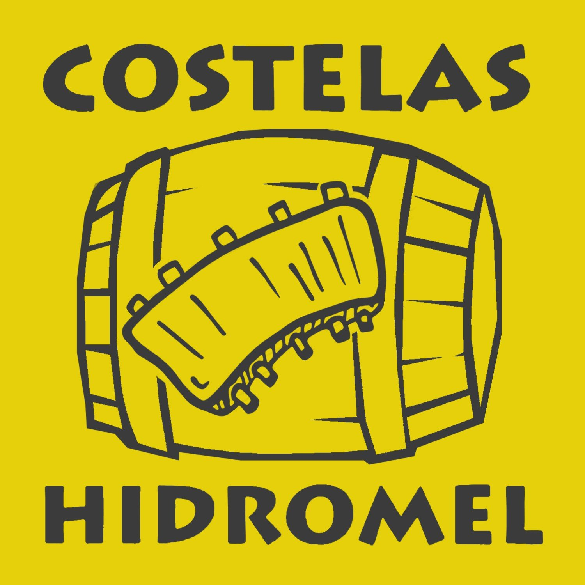

Matando Robôs Gigantes (Killing Giants Robots)
This brasilian podcast is presented by Beto Estrada, Didi Braguinha and Affonso Solano.
In this podcast they discuss about de pop and geek culture in a sarcastic and funny standpoint.

Costelas e Hidromel(Ribs and Mead)
Here is another brasilian podcast. The subject on this show is the mithology from the most variad cultures you can figure!
My favorite episodes is 57 and 58 who's talk about the poem by Dante Alighieri, the "Divine Comedy".
Unfortunaly the last episode was posted amost 1 year ago.
